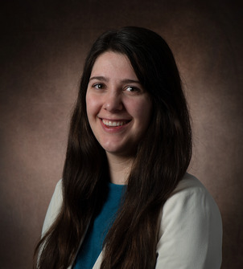

Ilse van der Voort
PhD Candidate in Economics · Erasmus University Rotterdam & Tinbergen Institute
I am a PhD candidate in Economics at Erasmus University Rotterdam and the Tinbergen Institute. My research is in applied microeconomics, with a focus on health, labour, and family economics.
I study how early-childhood interventions, such as home visiting programmes, shape families in the long run, including the employment and wellbeing of parents and grandparents.
- Applied Microeconomics
- Health Economics
- Labour Economics
- Family Economics